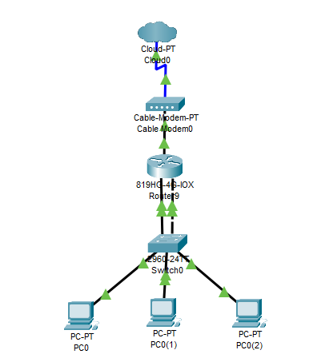

Project Two: Setting up/Reinforcing my Homelab
Introduction
The establishment of a homelab is essential for one's career in the field of IT. Allowing one to play around and learn current market technology. This environment allows a user full freedom to play around with it without breaking production environments.
Benefits of a Homelab Include:
- Hands-on Learning - Reinforce your theoritical knowledge gained from certifications and learn new current market technologies.
- Testing and Experimentation - Allows you to test tools, scripts, patches, and configurations before implementing in production.
- Cost-effectiveness - Can be used to self-host various services and avoid subscription-services like Goggle Cloud.
- Privacy - Allows you to controls your own data.
Step 1: Hardware & Software Setup:
To start off, I want to understand how the layout of my homelab should be. I used Packet Tracer to create a logical topology:
1. Logical Topology
Given my limited budget, I decided to keep my lab minimalistic, going with a Router on a Stick approach.
2. Equipment Use:
- Router: Ubiquiti EdgeRouter 4
- Switch: MikroTik CRS326-24G-2S+IN
- PC: HP Premium EliteDesk 800 G3 Business Mini Desktop Performance PC
- PC: MLLSE Mini PC M2 Air Mini Desktop Computer with Intel Gemini Lake N4000
- PC: Dell Inc. Lattitude E5530 non-vPro
Step 2: Network Configuration
1. Basic Connectivity
To start off, I decided to focus on basic connectivity, ensuring that all my devices can ping to each other.
I adapted a top-bottom approach, ensuring that my router was configure, then my switch, then mini-PC's.